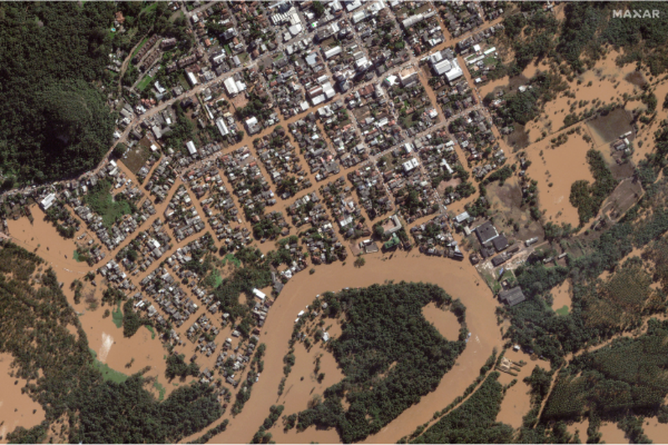

Principais Problemas Causados

A enchente no Rio Grande do Sul causou uma série de problemas graves, afetando diversas áreas, comunidades e setores. Aqui estão alguns dos principais problemas observados:
- Perda de Vidas: Muitas pessoas perderam suas vidas e outras estão desaparecidas, gerando sofrimento para as famílias e comunidades afetadas.
- Desabrigados: Centenas de pessoas perderam suas casas e buscam abrigos temporários, gerando uma necessidade urgente de moradia e infraestrutura.
- Danos à Infraestrutura: Pontes, estradas e redes de energia e água foram destruídas, dificultando o acesso e a recuperação das áreas afetadas.
- Saúde Pública: A contaminação da água e o acúmulo de lixo aumentam os riscos de doenças como leptospirose, dengue e infecções gastrointestinais.
- Agricultura: Destruição de plantações e perda de rebanho impactam agricultores e a cadeia de abastecimento alimentar.
- Impacto Econômico: Pequenos e grandes comércios perderam mercadorias e foram danificados, afetando o comércio local e a economia da região.
- Serviços Públicos: Escolas, hospitais e outros serviços essenciais foram prejudicados, afetando a educação e o atendimento de saúde para a população.
- Impactos Ambientais: A enchente trouxe impactos negativos para o meio ambiente, com deslizamentos de terra, erosão e contaminação de rios, o que pode ter efeitos a longo prazo nos ecossistemas locais
Esses problemas tornam a recuperação um processo complexo, envolvendo ações rápidas de assistência, além de planejamento e investimentos para prevenir novos desastres.
Soluções para Mitigar os Impactos
Para mitigar os impactos das enchentes e ajudar na recuperação, o governo e a comunidade local podem adotar diversas soluções práticas. Aqui está uma lista de ações e exemplos de solicitações que podem ser feitas tanto pelo governo quanto pelos moradores:
- Assistência e Acolhimento:
Governo: Criar abrigos temporários para desabrigados com assistência social, alimentação e suporte psicológico. Exemplo: Montagem de escolas e ginásios para acolhimento emergencial.
Moradores: Solicitar doações de alimentos, roupas e itens de higiene para as famílias afetadas. Exemplo: Organizar pontos de coleta em igrejas e centros comunitários.
- Reparos na Infraestrutura:
Governo: Reparar estradas, pontes, redes de energia e água para restabelecer o acesso às áreas afetadas. Exemplo: Mobilizar equipes para reconstrução de pontes destruídas.
Moradores: Solicitar conserto rápido das vias para facilitar o trânsito local e acesso a serviços. Exemplo: Enviar pedidos formais para que a prefeitura priorize ruas críticas.
- Auxílio Financeiro:
Governo: Disponibilizar auxílios financeiros e linhas de crédito sem juros para reconstrução de moradias e negócios. Exemplo: Oferecer programas como o “Auxílio Calamidade” para famílias afetadas
Moradores: Solicitar auxílio para reformas e reposição de bens essenciais perdidos na enchente. Exemplo: Pedir financiamentos facilitados para pequenos comerciantes.
- Saúde e Saneamento:
Governo: Fortalecer as campanhas de vacinação, oferecer mutirões de saúde e prevenir surtos de doenças transmitidas pela água. Exemplo: Disponibilizar unidades móveis para vacinação contra hepatite e tétano.
Moradores: Organizar ações comunitárias de limpeza e pedir maior controle de pragas. Exemplo: Voluntários organizam mutirões de limpeza e campanhas educativas.
- Apoio à Agricultura e Pecuária:
Governo: Conceder subsídios e assistência técnica para agricultores recuperarem plantações e rebanhos. Exemplo: Promover subsídios em insumos agrícolas e alimentação para animais.
Moradores: Solicitar ajuda para salvar plantações remanescentes e replantio. Exemplo: Organizar cooperativas para fortalecer o pedido de apoio à extensão rural.
- Prevenção e Infraestrutura:
Governo: Investir em sistemas de drenagem, diques e obras de contenção para prevenir futuras enchentes. Exemplo: Implementar projetos de ampliação de bacias de retenção.
Moradores: Colaborar em reuniões e discussões sobre planejamento urbano e prevenção de enchentes. Exemplo: Participar de audiências públicas para expressar a necessidade de maior preparo.
- Educação e Consciência Comunitária:
Governo: Promover campanhas educativas sobre como agir em situações de enchente e primeiros socorros. Exemplo: Campanhas de treinamento de defesa civil para toda a população.
Moradores: Mobilizar-se para participar de cursos e treinar voluntários. Exemplo: Formar brigadas comunitárias de resposta rápida.
- Parcerias com o Setor Privado e ONGs:
Governo: Colaborar com ONGs para ajuda humanitária e apoio psicológico, além de incentivos fiscais para empresas que ajudarem. Exemplo: Parcerias com ONGs para atendimento a longo prazo.
Moradores: Buscar apoio em ONGs e empresas locais para donativos e suporte. Exemplo: Solicitar doações de supermercados e farmácias.
Estas ações, quando realizadas de forma conjunta entre o governo e a comunidade, podem reduzir o sofrimento dos afetados e fortalecer a região contra futuras enchentes.
Impactos no Brasil e no Exterior
As enchentes causam efeitos devastadores tanto no Brasil quanto em outros países. Esses impactos podem ser observados em várias áreas, como infraestrutura, saúde, economia e meio ambiente. Abaixo, segue uma lista dos principais efeitos das enchentes no Brasil e no exterior.
Brasil:
- Infraestrutura: Ruas, pontes, ferrovias e edifícios frequentemente são danificados, dificultando o transporte e o acesso a áreas afetadas. Exemplo: As enchentes em São Paulo em 2020 danificaram estradas e isolaram comunidades.
- Perda de Vidas e Desabrigados: A perda de vidas e o aumento do número de desabrigados são recorrentes. Exemplo: Em 2022, enchentes na Bahia deixaram milhares de pessoas sem moradia.
- Saúde Pública: A contaminação de água e acúmulo de lixo aumentam os surtos de doenças, como leptospirose e dengue. Exemplo: Após enchentes em Recife, houve aumento nos casos de leptospirose.
- Prejuízos na Agricultura e Economia: A destruição de plantações e perda de gado impactam a agricultura e os preços dos alimentos. Exemplo: Enchentes em Santa Catarina causaram prejuízos milionários aos produtores de arroz.
- Problemas Ambientais: Deslizamentos de terra e contaminação de rios ameaçam o ecossistema e causam erosão do solo. Exemplo: No Pantanal, enchentes afetaram a fauna e flora locais.
- Desafios no Planejamento Urbano: Muitas cidades brasileiras sofrem com infraestrutura inadequada para lidar com chuvas intensas. Exemplo: A cidade do Rio de Janeiro enfrenta enchentes recorrentes devido à ocupação desordenada e falta de drenagem.
Exterior:
- Efeitos Econômicos em Larga Escala: As enchentes causam grandes prejuízos econômicos, especialmente em países onde áreas industriais são afetadas. Exemplo: Na Alemanha, as enchentes de 2021 resultaram em bilhões de euros em danos.
- Desastres Ambientais e Climáticos: Mudanças climáticas intensificam enchentes ao redor do mundo, afetando ecossistemas inteiros. Exemplo: No Paquistão, em 2022, chuvas históricas causaram inundações que afetaram a biodiversidade e reduziram áreas agrícolas.
- Impacto no Turismo: Cidades turísticas são afetadas, prejudicando o turismo local e a economia. Exemplo: Em Veneza, Itália, enchentes sazonais e o fenômeno de "acqua alta" impactam o turismo e aumentam os custos de manutenção dos pontos históricos.
- Deslocamento de Populações e Crises Humanitárias: As enchentes levam ao deslocamento de milhões de pessoas, criando crises humanitárias. Exemplo: Na Índia e Bangladesh, enchentes anuais causam grandes deslocamentos populacionais
- Aumento de Doenças Transmitidas pela Água: Em países tropicais, as enchentes agravam doenças transmitidas pela água. Exemplo: No Sudeste Asiático, a malária e a dengue aumentam após enchentes.
- Problemas de Habitação e Reconstrução: A destruição de moradias leva a um processo lento de reconstrução, exigindo investimentos elevados. Exemplo: Nos Estados Unidos, após o furacão Katrina, Nova Orleans enfrentou anos de reconstrução.